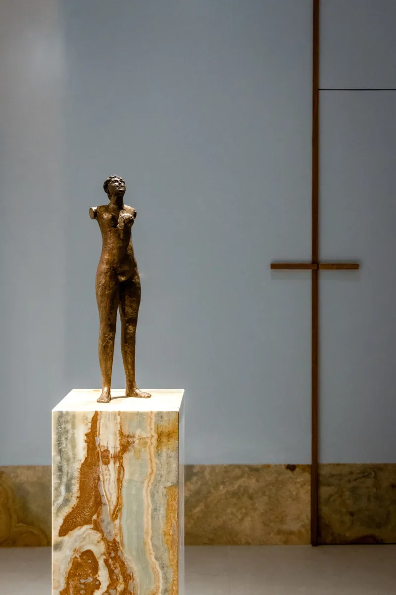
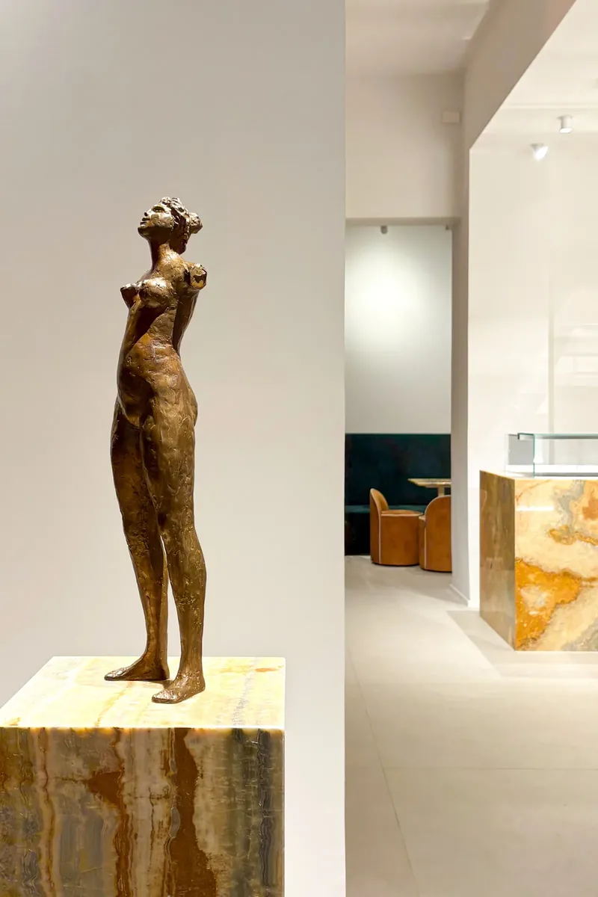
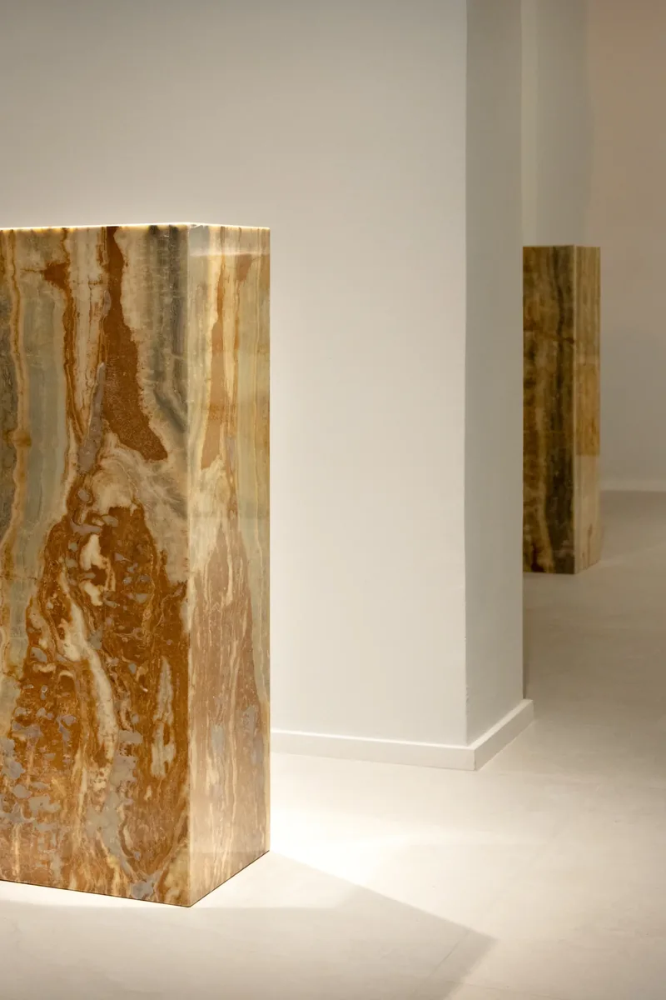

Progettazione in centri storici e siti UNESCO
Intervenire in un edificio storico chiede di capire prima di trasformare. La specializzazione in progettazione in siti storici e contesti UNESCO permette allo studio di affrontare ogni intervento con sensibilità e profondo rispetto per l'esistente.
Modena ne è un esempio: il Duomo, la Torre Civica e Piazza Grande sono patrimonio mondiale UNESCO dal 1997, e il centro storico intorno è fatto di edifici con murature, solai e finiture da conservare. Qui lo studio ha progettato il locale Anita, in Corso Canalgrande, e i due appartamenti di via Carteria, dove il soffitto decorato esistente viene conservato accanto agli elementi nuovi.
Cosa comprende
- Rilievo accurato e lettura dell'edificio, delle sue trasformazioni e dei materiali originali.
- Progetto compatibile con i vincoli e con il carattere del luogo.
- Pratiche edilizie e rapporti con il Comune e, quando serve, con la Soprintendenza.
- Render e realtà virtuale per valutare l'inserimento del progetto.
- Direzione lavori attenta alle lavorazioni sull'esistente.
Progetti

Due appartamenti

Bar e ristorante

Bar e ristorante

Bar e ristorante
Domande frequenti
Serve l'autorizzazione della Soprintendenza?
Per gli edifici vincolati come beni culturali, e per molti interventi in aree sottoposte a tutela paesaggistica, oltre al titolo edilizio comunale serve un'autorizzazione della Soprintendenza. Non tutti gli edifici dei centri storici sono vincolati: si verifica caso per caso.
Per approfondire: ristrutturare casa nel centro storico di Modena e progettare in un contesto storico.
Parliamo del tuo progetto
Scrivi a info@samuelesilvestriarchitetto.com o chiama il +39 366 493 8286. Lo studio è a Modena, in via Asiago 58, e segue progetti in tutta Italia.